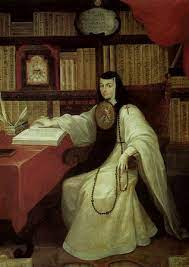

Portrait of Sor Juana Ines de la Cruz. Miguel Cabrera. c. 1750 CE Oil on canvas.
- Function
- Many portraits survive, but all images derive from a now-lost self-portrait
- Painting was done for her admirers 55 years after Sor Juana Ines’s death.
- Content
- Portrayed seated in her library surrounded by symbols of her faith and her learning
- She wears the habit of the religious order of the Hermits of Saint Jerome nuns of Mexico City; the habit includes the escudo–a dreamed vellum painting
- Painting may have been inspired by the image of Saint Jerome seated at a desk
- Context
- Sor Juana Ines, a child prodigy
- She was a criollo woman who became a nun in 1669
- A feminist culture survived in Mexican convents, where privileged nuns could live in comfort with servants and households
- Sor Juana was a literary figure who wrote books that were widely read she also wrote poetry and theatrical pieces, and maintained a great library
- Sor Juana was instrumental in giving girls an education in a male-dominated world.